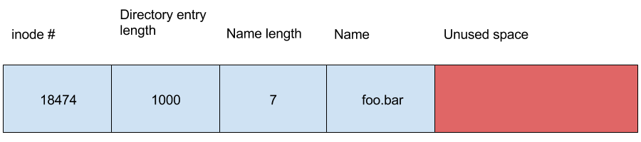
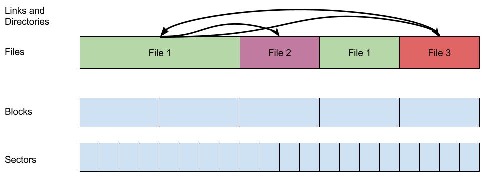

A file system is a hybrid data structure because we need to balance a variety of concerns. A file system exists in main memory and in secondary storage, which gives it persistence (from the hard disk) and fast access (from ram). Ordinarily, speed and persistence are incompatible goals because there is no cheap, fast, and persistent storage device.
Almost all file systems have directories, although some (like RT-11 based systems) don't allow nesting directories, unlike more modern systems such as FAT and ext. Usually, in RT-11, FAT, and ext based file systems, directories are implemented as files that contain entries referencing the files they contain. Let's consider the structure of an ext3 filesystem.
In ext3, each directory entry is structured something like this.
struct direntry {
int inode_number;
uint16_t entry_length;
char name_length;
char file_type;
char* file_name;
};
The 32 bit inode number maps each file name to a certain inode in a many-to-one fashion: each inode is associated with at least one filename.
The entry_length field specifies the length of this specific directory entry. Not all directory entries have the same size in ext3, for reasons we will cover later. One consequence of this is that directory entries cannot be accessed randomly, and to get to the nth entry you must traverse the n-1 entries before it - similar to a linked list.
The name_length field specifies how long this file's name is. Since this is a 1 byte number, the largest name is 256 bytes long.
The file_type field identifies the type of the file this entry describes - whether it's a directory, a symlink, or a normal file.
Lastly, the file_name field specifies the name of this file. Its length is taken from the name_length field.
So, a directory entry may look something like this:
The unused space at the end can become quite large for certain entries, potentially 64KiB under the right circumstances. Why is this space so large, and why don't we just have directory entries of constant length?
We have padding on the end to support easy unlinking of directory entries. With the current system, we can simply find the entry to remove, and set the previous entry's size to include the entry we want to unlink. There are some corner cases here (the previous entry is at max size, or the entry to unlink is the first entry) but in general this is a very simple approach.
Similarly, if we want to add in a new directory entry, that's as simple as finding a directory entry with enough space on the end, changing its entry_length to be smaller, and use the new space for the new directory entry.
So what is that inode_number field in the directory entry?
In ext3, each directory entry is associated with an inode, which possibly stands for "index node" according to Dennis Ritchie. The inode basically stores all the information for a file that doesn't depend on its name or path in the file system. Thus, inodes do not have names, only numbers. The need for this separation between location in the file system tree and information about the file itself will become apparent when we discuss linking .
The structure of an inode is something like this:
struct inode {
int owner;
time_t mtime;
time_t atime;
time_t ctime;
# permissions fields go here...
char type;
};
Note that the inode has fixed size, unlike the directory entry. This means that the inode block can be treated as an array, and individual inodes can be accessed randomly.
The owner field is a 32 bit user ID that specifies which user on this machine owns the file.
The mtime, atime, and ctime fields are timestamps that specify when the file was modified, when the file was accessed, and when the inode was changed last.
The inode also includes several permissions fields that specify which users and groups can read, write, and execute the file.
Interestingly, the inode also contains an 8 bit field for the type of the file, just as the directory entry does. At first, this is strange, because no other fields are duplicated from the inode and the directory entry. The reason both the inode and directory entry have a type field is two fold.
One, it's faster since it acts like a caching mechanism. When a program such as find . -type f (find files in the current directory that are regular files), runs, it is considerably faster than find . -mtime +1 (find files modified in the last day) because the first can walk through the file tree and see the type right there, and the second has to refer back to the inode for each file.
Two, the type of a file is immutable. While mtime, atime, ctime, etc. are modified very frequently, it is impossible to change a file's type - once a directory, always a directory, and so on. So, there is zero risk of cache invalidation when storing the file's type in the directory entry, whereas storing the other fields would mean there needs to be a cache coherency mechanism which would involve a lot of overhead.
In principle, we can consider inodes to be a sort of lower-level implementation of files, such that file names and paths are built on top of the inodes. In fact, we can create several layers of such abstractions in order to model a file system.
Sectors: Sectors are the lowest level in the file system abstraction. Disk controllers think in sectors, and sectors are not necessarily the same size on different disks. Commonly, they are 2048 bytes and are fixed size.
Blocks: Blocks are an arbitrary delimiting of disk space in the operating system. Commonly, there are 4 sectors to a block, making a block 8192 bytes. When dealing with expanding files or other file system actions, operating systems deal with whole numbers of blocks rather than worrying about sectors and sector sizes. Sometimes a disk may not have an even number of blocks on it, in such cases a few sectors may be disused, but this is not a huge deal.
Files: Inodes are associated with blocks on the disk that contain data. These regions do not have names, but they do have numbers, owners, types, and so on. Files are of course not of fixed size, and can grow and shrink as needed. No hierarchy exists at this level.
Files and directories: Directory entries give names to files. Some of these files contain pointers to other files, making them what we would call directories. In this level of abstraction, the filesystem becomes tree-shaped rather than flat.
Symlinks: In this level, we allow files to link to other places on the filesystem tree. So, the tree is no longer truly a tree, since there can be links from branch to branch. In some filesystems, there can even be loops in the file system graph.
Unfortunately, if we want to completely obliterate a file, we can't simply call unlink("foo"). This is because all unlink does is remove the file's directory entry and allow its blocks to be reused, but until they are overwritten the file still exists on disk.
This method is secure on the highest level of file system abstraction assuming there are no hard links remaining to the file. If there are hard links, then this file is not even removed from the file tree and can be easily accessed. If not, it must be accessed by subtler means.
Let us say that the link count is zero, and assume you have only used standard system calls to remove files. Attempt to remove the file ls -l foo rm foo After running the first ls command, the observed link count is one. From the second command we may assume that we have effectively removed the file foo.
However, this is not what is observed. Why isn't this effective?
There is a race condition in this code. If someone runs the command ln foo bar between the commands ls and rm, it is possible to obtain a different value of the link count. Although the directory entry is collapsed and the link count is decremented initially, the file still exists on disk, so running ln foo bar can result in a different final value of the link count.
Consider another way of obtaining the file:
$ touch secret
$ chmod 600 secret
$ ls -l rw----------
rw--------------0
While you may consider this file to be secure, in reality, this too is not sufficiently secure. This is because in Linux and other systems, file permissions are checked at open time; additionally, if a file doesn't have a name, you can reclaim the name of a former file. The name of the file isn't reclaimed only if some process has the file open. For example, what would happen if someone else runs
cat < foo
before rm foo? This would fail to be secure in our previous case, therefore this method does not work.
Consider the following commands:
shred file open file stat get size //overwrites with zeroes close file unlink fileThe command shred overwrites the file with zeroes. If someone opens the file during the process above, they will only read zeroes. What could be the problem with this method?
If you have root access, you can grab arbitrary sectors off the disk and read them. Consider /dev/rdsk/00 Can this be used to recover shredded data by some means? If you open /dev/dsk/00 in rw, you can make arbitrary changes. Additionally, when we overwrite with zeroes, we make the assumption that the zeroes are written where old data used to exist. In the middle of shredding, the file system may decide to move the block where I/O is happening(for example, in order to write closer to the disk head for increased efficiency), which can be likened to on the fly defragmentation of sorts. Another problem with overwriting with zeroes is that writing zeros over disk data is not guaranteed. For example, some sectors may be bad, and as a consequence the OS directs them to the functioning replacement sectors. However, the bad sectors may contain recoverable information that should have been overwritten in the ideal situation. In addition, as the write heads do not always follow the same path on the disk head, the disk may not be fully overwritten and echos that remain after overwriting may leave the possibility for recovery open with advanced equipment. Therefore, as a precautionary measure, shred overwrites the data thrice in order to minimize the possibility of a potential recovery.
What would happen if you ran this code?
chroot("subdir");
execl("/bin/emacs");
Remember that emacs can only see the files in subdir. This setup, where a program is confined certain part of the filesystem, is called a chrooted jail. Why would you create one? One benefit is that one can confine a user to a single space. But it is very hard to escape from a chrooted jail.
Consider the command abc/.. What happens? Nothing. You go back to your orignial directory abc. What about the command a/b/..? The command /.. goes to the parent directory. But what if we in a chrooted jail and b is the root? By convention, the parent directory of the root is the root, so using /.. in the root directory would just bring you back to the root. Similiarly, after using chroot, using the command chroot("/..") would have no effect.
Let's think about a possible situation where someone could escape from a chrooted jail. Say a user needs to set up a friendly environment for emacs in a chrooted jail, and runs the following commands:
$ln /usr/bin/emacs subdir/bin/emacs $ln /dev/tty subdir/dev/tty $ln /dev/disk/00 subdir/dev/disk/00
The problem is that if you are root inside this jail, you can open /dev/disk/00 and make arbitrary changes to the the file system. You have direct read and write control of the file system, which means you can access any file. This results from a mistake on the user's part.
Namei can have different flavors depending on the file flags. Consider open("a/b/c/d", O_WRONLY | O_CREAT | O_EXCL);. What happens in namei? We walk through the name from left to right. At the very end special things happen depending on the flag. In this case: O_WRONLY = we just need write accesss to the parent directory, O_CREAT = we don't insist that the file exists, O_EXCL = we actually insist that the file not exists.